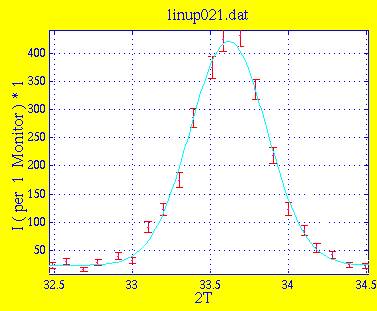
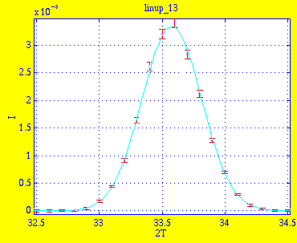

Amplitude 3.9953e+02 1.5684e+01 Centre 3.3616e+01 8.1827e-03 Width 2.4464e-01 7.9352e-03 Background 2.3076e+01 2.4532e+00 * Chi Squared 1.6681
This is the result linup_13.sim of simulation with 1e5 neutrons. Instrument definition linup-7.instr.

Amplitude 3.3383e-08 2.5724e-10 Centre 3.3578e+01 8.1181e-04 Width 2.3682e-01 7.1471e-04 Background -2.1336e-11 4.5505e-11 * Chi Squared 0.5123